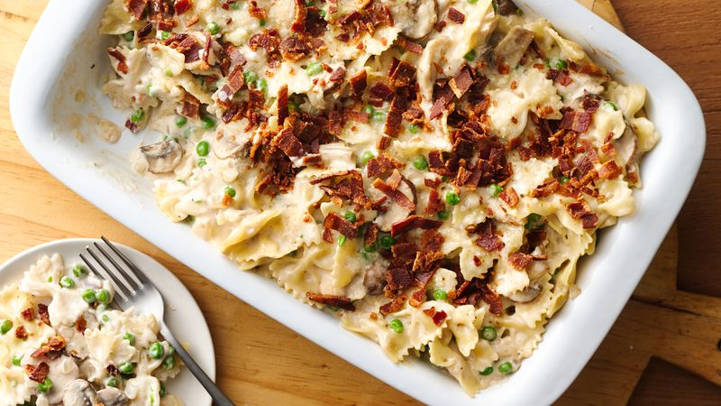

Chicken Bake Recipe
One Dish Chicken Bake

Ingredients
- 1 (6 ounce) package chicken-flavor stuffing mix
- 1 ½ cups hot water
- ¼ cup butter, cut into pieces
- 4 skinless, boneless chicken breasts
- 1 (10.75 ounce) can condensed cream of mushroom soup
- ⅓ cup milk
Cooking Instructions
- In a large bowl combine the seasoning packet from the stuffing mix with the hot water and butter. Let stand until butter melts. Stir in the stuffing crumbs, just to moisten, and let stand for 5 minutes.
- Preheat oven to 375 degrees F (190 degrees C).
- Place the chicken down the center of a 8x12 inch baking dish. Mix together the soup and milk and pour mixture over the chicken. Spoon some of the stuffing over the chicken breasts, then spoon the rest along the sides of the chicken. Bake in the preheated oven for 35 minutes or until the chicken is fully cooked and the juices run clear.